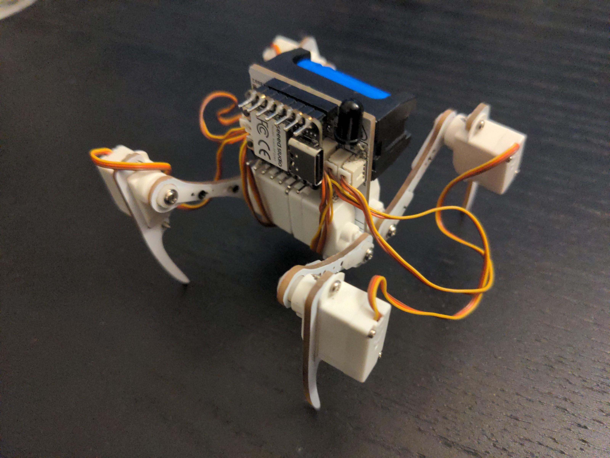

Now Just Program It¶
Published on 2023-01-26 in Wee Bug.
The last part that was missing - the battery - arrived yesterday, so I was able to verify that everything works so far. Unfortunately, the servos come from two different batches, and some of them rotate in opposite directions. I could fix that in hardware by just opening them and swapping the leads to the motors, but I think that I will instead make the code a little bit more flexible, add a Servo class and allow inverting each of the servos individually. It’s also possible I got some of the pin numbers swapped around – I need some quiet experimenting time to figure it all out, and also to fine-tune the trims on the servos and so on.
